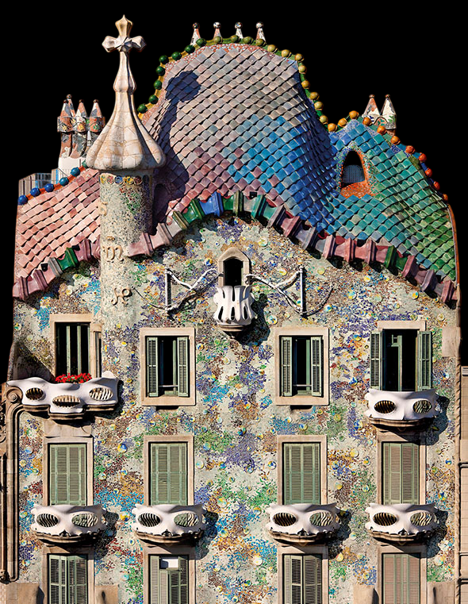

Барселона
Известные музеи Барселоны
Барселона – одно из наиболее притягательных мест для туристов со всего мира. Причина этого заключается в наличии большого количества разнообразных достопримечательностей, в числе которых интереснейшие архитектурные и исторические памятники, многочисленные музеи, большинство из которых поистине уникально.


Храм Святого Семейства
📍Адрес: Эшампле, 08013 Barcelona, Испания
👨Архитектор: Антонио Гауди, Хорди Бонет и Арменголь
🕑Год: 1882
Расположенный в самом центре Барселоны, Испания, храм Святого Семейства является одним из самых знаковых и наиболее посещаемых памятников и достопримечательностей города. Спроектированный известным каталонским архитектором Антонио Гауди, Саграда Фамилия знаменит не только уникальным сочетанием архитектурных стилей испанской готики, модерна и каталонского модернизма, но и тем, что этот грандиозный собор, возвышающийся над Барселоной, еще даже не достроен. Его строительство велось почти 150 лет, что делает его самой большой недостроенной церковью на Земле.
Музей CosmoCaixa
📍Адрес:Carrer d'Isaac Newton, 26, Sarrià-Sant Gervasi, 08022 Barcelona, Испания
👨Архитектор: Роберт и Эстев Террадас
🕑Год: 1909
КосмоКайша является эмблемой программы «Наука» в обществе фонда «Ла Кайша», целью которой является распространять и стимулировать научную культуру, участвовать в неформальном научном образовании и стимулировать научный интерес, а также придавать ценность исследованиям, как мотору социального прогресса.
Использующий инновационные музейные технологии КосмоКайша представляет собой великолепно оборудованную уникальную коллекцию вещей, живых существ и экспериментов. В 2004 году, после значительного расширения и полной перестройки, старинный Музей Науки был преобразован в КосмоКайша и превратился в то, чем является сегодня: уникальный незаурядный музей международного масштаба.
Дом Бальо
📍Адрес: Pg. de Gràcia, 43, L'Eixample, 08007 Barcelona, Испания
👨Архитектор: Антонио Гауди, Жозеп Мария Жужоль
🕑Год: 1904
Дом Бальо — прославление счастья, олицетворение морской стихии и мир мечты, воплотивший в себе природу и фантазию.
Фасад здания является воротами в символическую вселенную и его созерцание вызывает чувства, которые подсознательно нам напоминают непрерывную игру со светом и цветом. Его зрелищность никого не оставляет равнодушным и в любое время суток вызывает восхищение у прохожих.

Морской музей
📍Адрес: Av. de les Drassanes, s/n, Ciutat Vella, 08001 Barcelona, Испания
👨Архитектор: Неизвестный
🕑Год: 1936
За исключением кузнечного дела, все важнейшие занятия Барселоны были связаны с морем, с морской сущностью этого города. И следы этого сохранились в Драссанасе, на древних городских верфях, где теперь размещается Морской музей Барселоны — музей с 80-ти летней историей.
Это место у начала улицы Рамбла дает ясное представление о том, как Барселона последние 500 лет осваивала свою часть береговой линии.
Это самая совершенная верфь сохранившаяся со cредних веков, шедевр гражданского строительства. Именно здесь, в этих стенах, строились самые крупные суда на Средиземноморье.
В Музее представлены гальюнные фигуры, навигационные приборы, документальные свидетельства открытия Америки, макеты каравелл и галер, атлас 1493 года и т.д.
Музей Пикассо
📍Адрес: Carrer de Montcada, 15-23, Ciutat Vella, 08003 Barcelona, Испания
👨Архитектор: Эммануэль Гигон
🕑Год: 1963
Музей имени Пабло Пикассо в Барселоне имеет самое большое число работ великого художника. Каталонский музей был первым, который заработал в честь великого мастера Пикассо. Это именно то место, которое обязательно стоит посетить, если вы находитесь в Барселоне.
Красивые дворы, галереи и лестницы, сохранившиеся в первых трех из этих зданий, так же восхитительны, как и коллекция внутри. Коллекция музея представлена ранними работами и рассказывает историю становления выдающегося испанского художника.
Национальный музей искусства Каталонии
📍Адрес: Palau Nacional, Parc de Montjuïc, s/n, Sants-Montjuïc, 08038 Barcelona, Испания
👨Архитектор: Карлес Буигас, Энрик Ката и Ката
🕑Год: 1934
Национальный музей искусства Каталонии — музей в Барселоне, создан в 1990 году в результате объединения коллекций Музея современного искусства и Музея искусства Каталонии. Коллекция романики считается одной из самых полных в мире. Её основу образует уникальный отдел романских фресок. Ядро готической коллекции музея образуют каталонская станковая живопись и скульптура. Искусство барокко и ренессанса представлено значительными произведениями искусства XVI—XVIII веков и не только каталонского. Собрание живописи модерна объединяет известные произведения каталонского искусства XIX и первой половины XX веков. Чередой в экспозиции музея проходят различные направления этого периода, начиная от неоклассицизма и реализма, минуя модернизм и ноусентизм и заканчивая авангардным искусством.
Не стоит думать, что дворец достаточно осмотреть только снаружи, это было бы большой ошибкой. Даже если вас совсем не интересует история, культура и искусство, само здание стоит того, чтобы прогуляться по его залам.